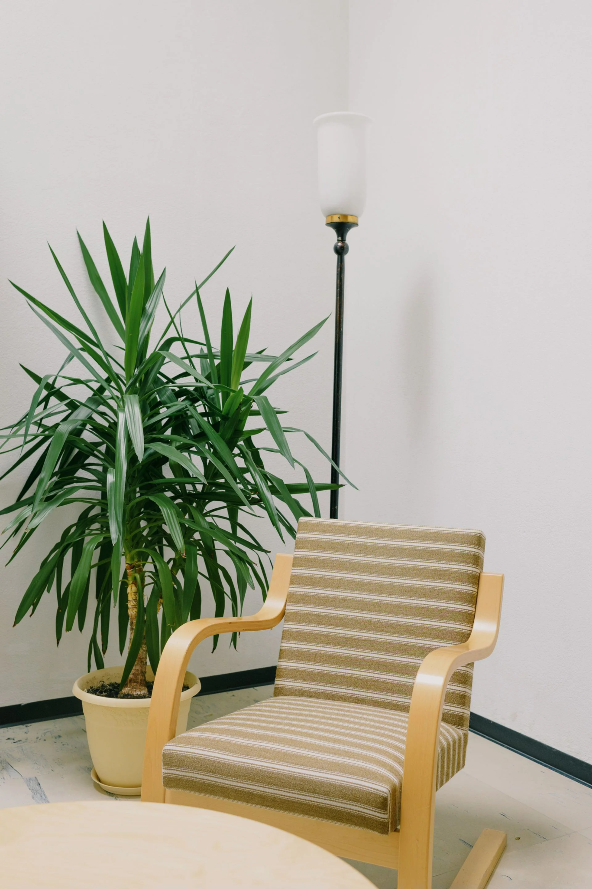

Imagem ilustrativa · não retrata o local ou a equipe01 / Harmonização orofacial · Dra. Kelly Meire Rodrigues
Cada rosto, um planejamento único.
LUMINA SEVEN. A Dra. Kelly Meire Rodrigues, cirurgiã-dentista (CRO-SP 146006), atua com harmonização orofacial no Centro de Potirendaba e também atende em São José do Rio Preto.
- Harmonização orofacial
- CRO-SP 146006
- Potirendaba
 Imagem ilustrativa · não retrata o local ou a equipe
Imagem ilustrativa · não retrata o local ou a equipe02 / Conheça a proposta
Harmonização orofacial em Potirendaba.
Toxina botulínica (Botox)
Um dos procedimentos que a Dra. Kelly divulga, sempre após avaliação individual.
Preenchimento labial
Segundo o próprio perfil, vai além do volume: busca proporção e harmonia.
Bioestimulação de colágeno
Procedimento apresentado entre os cuidados com o rejuvenescimento facial.
Rejuvenescimento facial com estratégia
Cada tratamento parte de um planejamento individual, com avaliação prévia, retorno e acompanhamento.
Consulta e experiência
O perfil mantém destaques que explicam como é a consulta e a experiência no consultório.
 Imagem ilustrativa · não retrata o local ou a equipe
Imagem ilustrativa · não retrata o local ou a equipe03 / Trajetória & cuidado
O resultado começa na avaliação.
A Dra. Kelly Meire Rodrigues é cirurgiã-dentista e atua com harmonização orofacial. Em seu perfil, ela defende o rejuvenescimento facial com estratégia: cada rosto pede um planejamento único, e o resultado começa na avaliação. O atendimento é na Avenida Maestro Antônio Amato, em Potirendaba, e também em São José do Rio Preto.
- Cirurgiã-dentista com CRO-SP 146006 informado no perfil
- Planejamento individual para cada rosto
- Atendimento em Potirendaba e em São José do Rio Preto
- Nota 5,0 nas avaliações do Google
 Imagem ilustrativa · não retrata o local ou a equipe
Imagem ilustrativa · não retrata o local ou a equipe04 / Seu próximo passo
Vamos conversar?
Potirendaba/SPConversar pelo WhatsApp ↗
Ver mapa do endereço +
Consulte horários, disponibilidade e condições pelo WhatsApp.
Harmonização orofacial · Dra. Kelly Meire Rodrigues